When I was a kid, it seemed like everything was bigger, brighter, and more interesting. Or maybe I was just smaller and hadn’t seen as much as I have now. Nevertheless, the world is increasingly shifting from color to monotone, from funky design to copy-and-paste houses. The question I want to answer is:
How (and why) has the world, specifically logos, shifted from interesting to dull?
We begin this journey in the 1970s, around 50 years from today (2026). Scroll through these polaroids to see how things have changed since then.
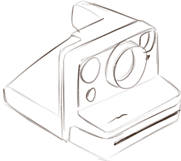
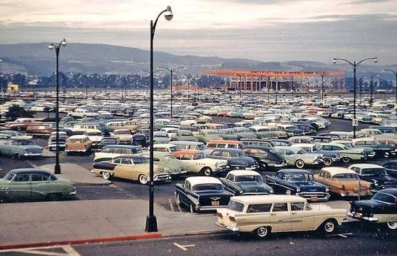
1950s parking lot2020s parking lot
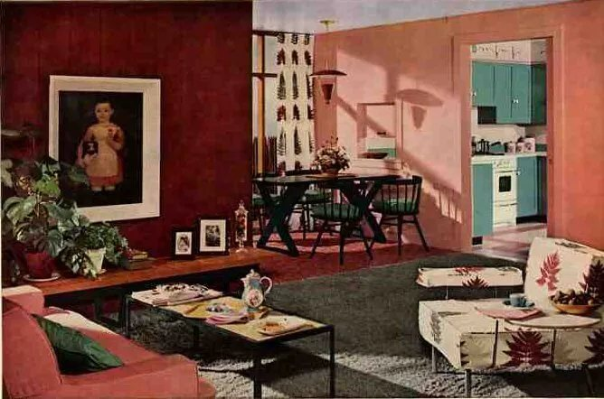
1950s living room
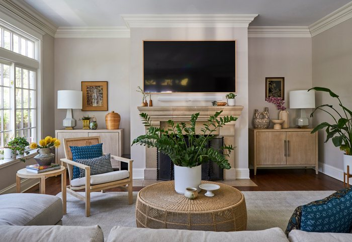
2020s living room
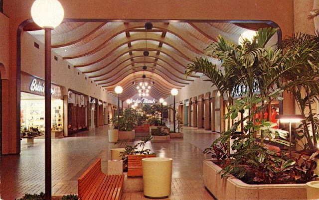
1950s Burlington Mall in Massachusetts
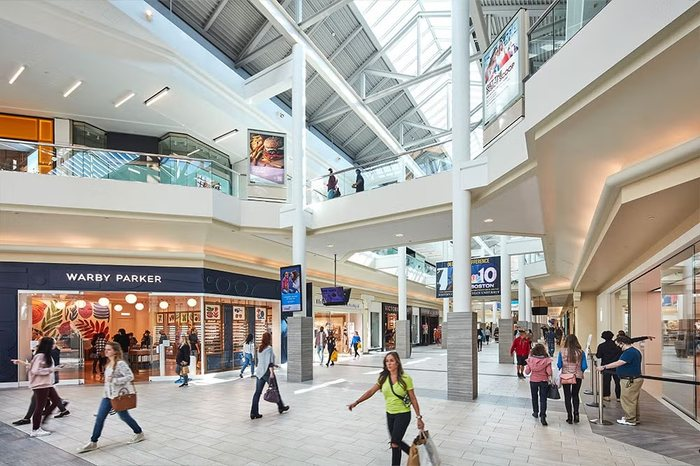
2020s Burlington Mall
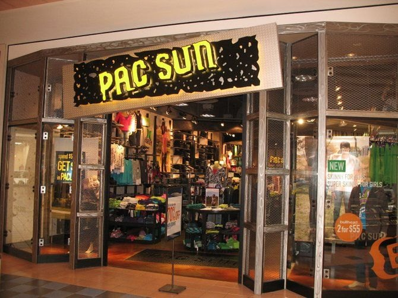
1990s PacSun2020s PacSun
Let’s look at another example dear to American culture, which made all the Europeans go crazy when they visited for the World Cup: American chain restaurants.
My childhood favorite was Applebees. Here’s the current logo.
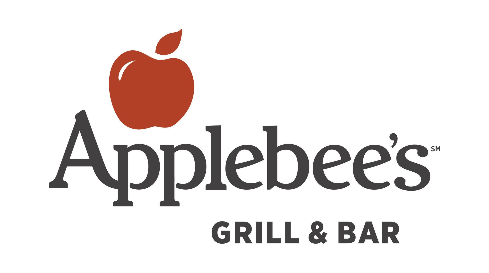
Applebees has been through a few changes since their inception in 1980.
1980
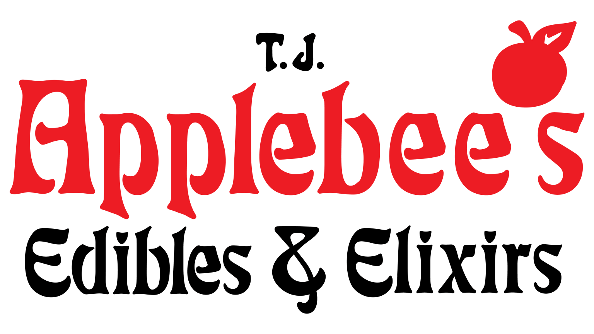
1982
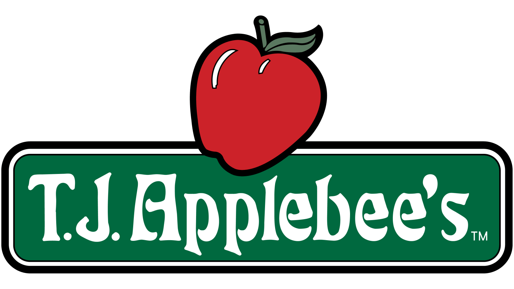
19831985
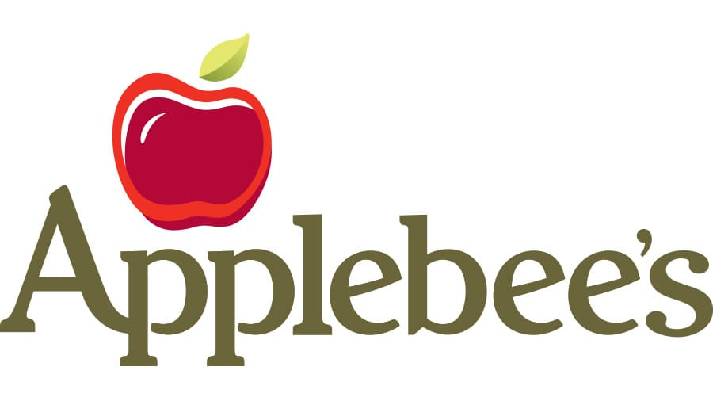
2007
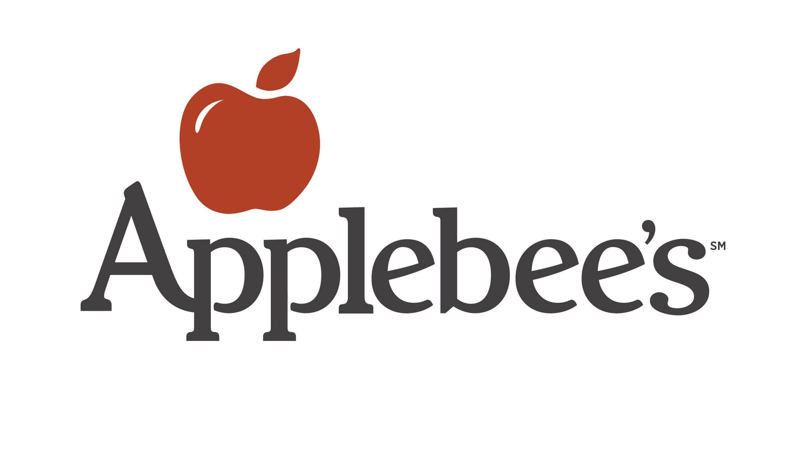
20142017
Visually, Applebee’s has greatly simplified. Per our complexity calculation (what?), it has a complexity change score of -1.4.
How does Applebees’s change in complexity stack up against other iconic brands?
Complexity Change
Color palette preferences have also drastically shifted since the 1970s. Continuing with Applebees, here’s its 1980 logo color palette versus current day.
1980
current day
Distinctive Hues Count
Rebrands By Decade
Bar heights show all industries. Cards filter to selected industry.